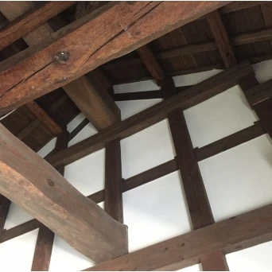
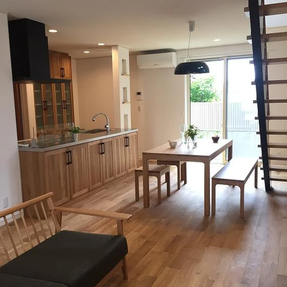
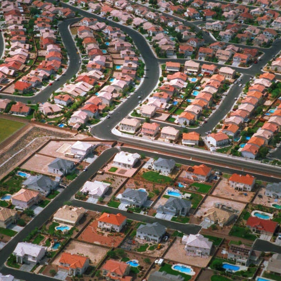

味わいを楽しむ
こんにちは、富山で自然素材にこだわるホンモノの家。フジ創アイノスです。 自然素材の特徴の一つに、一つとして同じものがないことも挙げられます。 樹木が育つためには葉を繁らせるための枝が必要であり、枝の跡が製材した 後に節と
続きを読む →FUJISOU AINOS JOURNAL
家づくりのこと、暮らしのこと。
日々の想いを、お伝えします。
家づくりについて 555件 ／ 新しい記事から 23・24ページ
こんにちは、富山で自然素材にこだわるホンモノの家。フジ創アイノスです。 自然素材の特徴の一つに、一つとして同じものがないことも挙げられます。 樹木が育つためには葉を繁らせるための枝が必要であり、枝の跡が製材した 後に節と
続きを読む →
こんにちは、富山で自然素材にこだわるホンモノの家。フジ創アイノスです。 漆喰の塗り壁は湿度にあわせて湿気を吸収＆放出し 快適な空気環境をつくる自然の調湿機能があります 独特の風合いは温かみにあふれ 人の心をほっと和ませる
続きを読む →こんにちは、富山で自然素材にこだわるホンモノの家。フジ創アイノスです。 木材が仕上げ材に使われるケースが多いのは床です。 住宅の床は、板張りのフローリングが大多数です。 このフローリングにもたくさんの種類があって、木の様
続きを読む →こんにちは、富山で自然素材にこだわるホンモノの家。フジ創アイノスです。 戸建住宅のほとんどは木造で建てられています。森で育った木材が伐り出されて、住宅の構造材となります。この木材はまさに自然素材の代表格です。自然が生み出
続きを読む →こんにちは、富山で自然素材にこだわるホンモノの家。フジ創アイノスです。 例えば食事の時にお椀１つを持って触った感覚で、漆器とプラスチックを区別している瞬間がありませんか。焼き物と比較すれば重さだけでもわかりますが、何とな
続きを読む →
こんにちは、富山で自然素材にこだわるホンモノの家。フジ創アイノスです。 今、私達の身の回りにあるものを、改めて冷静に見てみましょう。 どれだけプラスチックの製品が多くなっていることでしょうか。 レジ復路やストローは、買い
続きを読む →
こんにちは、富山で自然素材にこだわるホンモノの家。フジ創アイノスです。 よくありますよね。『言った』『言わない』事件。 「明日はお弁当はいらないから」 翌日。 「いらないなんて聞いてない！作ったじゃないの！」 「ちゃんと
続きを読む →
こんにちは、富山で自然素材にこだわるホンモノの家。フジ創アイノスです。 英語でCHINAは磁器、JAPANは漆器を表します。東アジアの国名が、こうしてそれぞれの器を表すのは、国名と品名のどちらが先かは分かりませんがとても
続きを読む →
こんにちは、富山で自然素材にこだわるホンモノの家。フジ創アイノスです。 地球全体を一つのレンズに見立てて、 ついにブラックホールの姿の撮影に成功しました。 その映像を、興味深く見た人も多いと思います。 光さえも吸い込まれ
続きを読む →
こんにちは、富山で自然素材にこだわるホンモノの家。フジ創アイノスです。 もともとラベンダーは「鎮静効果があるアロマ」とされ、眠る前に寝室などで香らせると良いといわれているものです。ですから、高血圧の人や高ストレスの人の状
続きを読む →
こんにちは、富山で自然素材にこだわるホンモノの家。フジ創アイノスです。 実際にハーブにどのような効果があるか具体的にご紹介しましょう。 千葉大学園芸学部の岩崎寛先生は緑と健康をクロスさせた新たな分野で、園芸療法やアロマセ
続きを読む →こんにちは、富山で自然素材にこだわるホンモノの家。フジ創アイノスです。 インテリアを始めとするデザインを考える時に 「simple is best」という言葉を聞くことが多いと思います。 様々な要素をできる限りそぎ落とし
続きを読む →
こんにちは、富山で自然素材にこだわるホンモノの家。フジ創アイノスです。 木材は石の様に雨風に打たれても変わらないでいることはできません。 でも、それは金属も一緒で、多くは錆によって風合いが変わったものへと変化してゆきます
続きを読む →
こんにちは、富山で自然素材にこだわるホンモノの家。フジ創アイノスです。 住まいのリモデリングというのは、間取りや設備のリフォームとは違い、 ライフスタイルを変えることです。そしてライフスタイルは、デザインによって表されま
続きを読む →
こんにちは、富山で自然素材にこだわるホンモノの家。フジ創アイノスです。 サスティナブルデザインの方が、新しい買い手が付きやすく、高い値段で売れるという本音も見え隠れしています。そのうえ、あくまでもデザインとして考えられて
続きを読む →
こんにちは、富山で自然素材にこだわるホンモノの家。フジ創アイノスです。 住宅の価値を高めるデザインの要素としてサスティナブルという言葉が使われます。 「持続可能」というこの言葉の概念も日本とアメリカで大きく違うようです。
続きを読む →
こんにちは、富山で自然素材にこだわるホンモノの家。フジ創アイノスです。 住宅の質とは、どのようなものなのでしょうか。 たとえば住宅の性能や機能は、質と言えるのでしょうか。 アメリカでは、インスペクションという検査制度によ
続きを読む →こんにちは、富山で自然素材にこだわるホンモノの家。フジ創アイノスです。 様々な国の住宅市場を比較してみようとしても それぞれに統計上の区分なども違い、単純な比較はできません。 その上、別にアメリカで住宅を求めようとしてい
続きを読む →
こんにちは、富山で自然素材にこだわるホンモノの家。フジ創アイノスです。 アメリカは２０世紀前半の１９２９年、世界恐慌で同様の経験をしています。 この時には、新築住宅着工数は恐慌前の１０分の一にまで減りました。住宅着工数は
続きを読む →こんにちは、富山で自然素材にこだわるホンモノの家。フジ創アイノスです。 「リーマンショック級の出来事が起きない限り、消費増税を実施する」 という言葉を、何度も聞かされてきました。 その例えとなっているリーマンショックはす
続きを読む →
こんにちは、富山で自然素材にこだわるホンモノの家。フジ創アイノスです。 地図で見る日本の形は、私達の頭の中に強く記憶されています。そして変わらないものと信じています。 没後２００年の伊能忠敬が描いた精緻（せいち）な日本は
続きを読む →こんにちは、富山で自然素材にこだわるホンモノの家。フジ創アイノスです。 「家は三度建てなければわからない」と 言われるような経験を必要としているようです。 企画住宅には、その経験値が含まれています。 一方、自由設計の家を
続きを読む →
こんにちは、富山で自然素材にこだわるホンモノの家。フジ創アイノスです。 日本が屈指の工業国であることは、世界中で認められていることです。様々な製品の生産性を高め、高い技術や品質を獲得してきました。住宅も、同じ工業化の中に
続きを読む →
こんにちは、富山で自然素材にこだわるホンモノの家。フジ創アイノスです。 世界中から、インバウンドで旅行客が訪れています。 関西空港に国内便で降りても、歩いてる方はアジアやヨーロッパはじめ、海外の方々で一杯です。 京都に向
続きを読む →